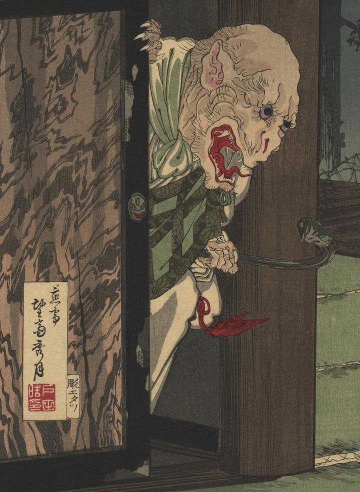

襖から出てきた僧形の化物。獣のような耳、鋭い爪、口からは牙が見える。左手に蛇の杖を持っている。
著作者：望齋秀月／出典：親書誌：U426_nichibunken_0352：尼子武勇伝；アマゴブユウデン／日付：2014／資源識別子：U426_nichibunken_0352_0001_0000
Copyright (c)2010- International Research Center for Japanese Studies, Kyoto, Japan. All rights reserved.